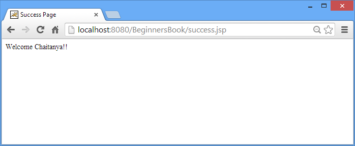

In this post we are going to discuss about response implicit object in JSP. It is an instance of javax.servlet.http.HttpServletRequest and mainly used for modifying the response which is being sent to the browser after processing the client’s request.
Quick links:
Methods of response Implicit Object
void setContentType(String type)
void sendRedirect(String address)
void addHeader(String name, String value)
void setHeader(String name, String value)
boolean containsHeader(String name)
void addCookie(Cookie value)
void sendError(int status_code, String message)
boolean isCommitted()
void setStatus(int statuscode)
Let’s see each method in detail –
- void setContentType(String type) – This method tells browser, the type of response data by setting up the MIME type and character encoding. The information sets by this method helps browser to interpret the response. Example –
response.setContentType("text/html"); response.setContentType("image/gif"); response.setContentType("image/png"); response.setContentType("application/pdf"); - void sendRedirect(String address) – It redirects the control to a new JSP page. For e.g. When the browser would detect the below statement, it would be redirected to the beginnersbook.com from the current JSP page.
response.sendRedirect("http://beginnersbook.com"); - void addHeader(String name, String value) – addHeader method adds a header to the response, basically it includes a header name and it’s value. For example – The below statement will include a header “Site” in the response with value “BeginnersBook.com”.
response.addHeader("Site", "BeginnersBook.com"); - void setHeader(String name, String value) – It sets the header value. This method overrides the current value of header with the new value. Let’s say I’m modifying the value of Header “Site“. The below statement would modify the current value BeginnersBook.com to a new value BB.com
response.setHeader("Site", "BB.com"); - boolean containsHeader(String name) – It returns a Boolean value true/false. It basically checks the whether the header is present in the response or not. For example – Above, in the addHeader method example we have added a Site Header in response so the below statement would return true.
response.containsHeader("Site"); - void addCookie(Cookie cookie) – This method adds a cookie to the response. The below statements would add 2 Cookies Author and Siteinfo to the response.
response.addCookie(Cookie Author); response.addCookie(Cookie Siteinfo); - void sendError(int status_code, String message) – It is used to send error response with a code and an error message. For example –
response.sendError(404, "Page not found error");
- boolean isCommitted() -It checks whether the Http Response has been sent to the client, if yes then it returns true else it gives false.
<% if(response.isCommited()) { <%--do something --%> }else { <%--do something else --%> } %> - void setStatus(int statuscode) – This method is used to set the HTTP status to a given value. For e.g. the below statement would set HTTP response code to 404 (Page not found).
response.setStatus(404);
Response Implicit Object Example
In the below example we are receiving id and password from login page and then we are matching them with hardcoded correct id/pass. If the credentials are correct the sign-in page redirects to success page else it redirects to sign-in fail JSP page.
index.html
<html> <head> <title>Login Page</title> </head> <body> <form action="checkdetails.jsp"> UserId: <input type="text" name="id" /> <br><br> Password: <input type="text" name="pass" /> <br><br> <input type="submit" value="Sign In!!"/> </form> </body> </html>
This JSP page verifies the input id/pass against hard-coded values.
checkdetails.jsp
<html>
<head><title>Check Credentials</title>
</head>
<body>
<%
String uid=request.getParameter("id");
String password=request.getParameter("pass");
session.setAttribute("session-uid", uid);
if(uid.equals("Chaitanya") && password.equals("BeginnersBook"))
{
response.sendRedirect("success.jsp");
}
else
{
response.sendRedirect("failed.jsp");
}
%>
</body>
</html>
This JSP page would execute if id/pass are matched to the hardcoded userid/password.
success.jsp
<html>
<head><title>Success Page</title>
</head>
<body>
<%
String data=(String)session.getAttribute("session-uid");
out.println("Welcome "+ data+"!!");
%>
</body>
</html>
The control will be redirected to this page if the credentials entered by user are wrong.
failed.jsp
<html>
<head><title>Sign-in Failed Page</title>
</head>
<body>
<%
String data2=(String)session.getAttribute("session-uid");
out.println("Hi "+ data2+". Id/Password are wrong. Please try Again.");
%>
</body>
</html>
Output Screenshots:
Login page
Success Page: When userId and Password are correct.

Login with incorrect details.
Sign-In fail Page: When Id and Password are wrong.
That’s all for now. Let us know if you have any questions and doubt regarding the response implicit object in JSP.
I saw a typing mistake in your post… that is response implicit object in JSP. It is an instance of javax.servlet.http.HttpServletResponse.
Response implicit object is an instance of HttpServletResponse not HttpServletRequest. Please correct it
Thanks,
Ramesh M